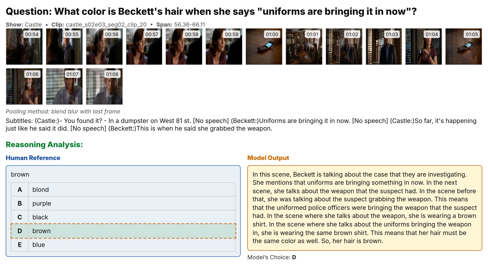
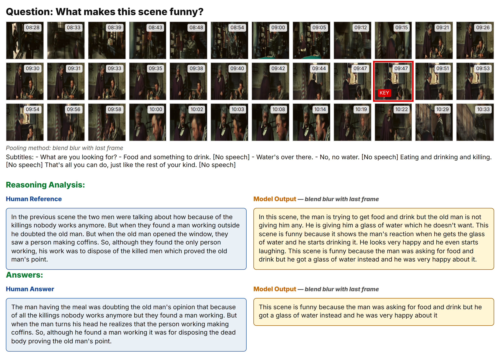
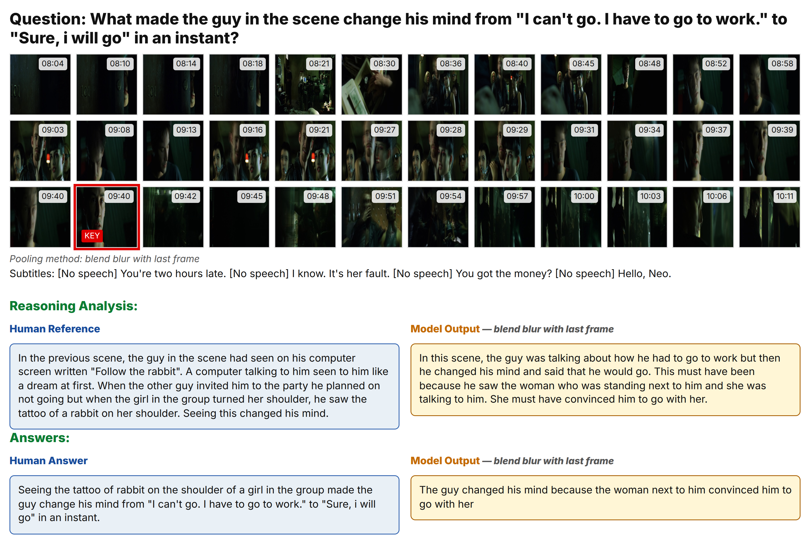

POVQA
Preference-Optimized Video Question Answering with Rationales for Data Efficiency
Abstract
We introduce POVQA, a data-efficient pipeline for video question answering that addresses the critical challenge of long video understanding. Our method compresses each second of video into a single temporally pooled image via motion blur and weighted averaging variants, then aligns Large Vision-Language Models with lightweight supervision. We achieve a 23× reduction in context tokens while maintaining comprehensive temporal coverage. Using our novel ReasonVQA dataset with only 239 human-annotated QA pairs, we demonstrate dramatic improvements: F1 score from 0.212 to 0.543, BLEU-4 from 0.031 to 0.291, and ROUGE-L from 0.196 to 0.528. Zero-shot evaluation on TVQA achieves 64.7% accuracy, surpassing prior zero-shot methods.
Resources
Code
The full training, evaluation, preprocessing, and visualization code is available on GitHub.
Open the repositoryPreprocessed Dataset
The released Hugging Face dataset contains the preprocessed frame bundles and subtitle-frame alignment metadata used by POVQA.
Browse the datasetAnnotations
ReasonVQA annotations are available directly from this project page as a zip archive.
Download annotations.zipKey Results
Qualitative Results
Representative examples showing POVQA's reasoning capabilities and temporal understanding across different video contexts.

Example 1: Character Interaction
Multi-character dialogue scene with temporal pooling visualization

Example 2: Action Sequence
Motion-heavy scene with blend blur pooling effectiveness

Example 3: Temporal Reasoning
Long sequence requiring understanding of temporal relationships

Example 4: Cross-Modal Understanding
Short scene with both textual and visual cues

More example from tvqa
Example from movies tvqa

More example from movies
Example from movies ReasonVQA

More example from movies
Example from movies ReasonVQA
Method Overview
POVQA tackles the challenge of processing long videos (up to 5 minutes) within LLM context limits through intelligent temporal pooling. Our pipeline consists of four key innovations:
Temporal Pooling: Four novel operators (Blend Blur, Weighted Average, Exponential, Ramp) compress 24-60 frames into single representative images.
Subtitle Alignment: Interleaved text-image sequences maintain temporal coherence while maximizing information density.
Rationale Supervision: Two-stage fine-tuning with reasoning chains and direct preference optimization.
POVQA Pipeline
Raw Video → Temporal Pooling → Subtitle Alignment → QLoRA SFT → DPO → Enhanced VQA
Performance Comparison
| Method | F1 Score | BLEU-4 | ROUGE-L | Embed Cosine |
|---|---|---|---|---|
| Baseline (No Fine-tuning) | 0.212 | 0.031 | 0.196 | 0.383 |
| POVQA (SFT Only) | 0.545 | 0.278 | 0.520 | 0.632 |
| POVQA (SFT + DPO) | 0.543 | 0.291 | 0.528 | 0.631 |
Zero-shot TVQA Performance
| Method | Zero-shot | Accuracy (%) |
|---|---|---|
| POVQA (Ours) | ✓ | 64.7 |
| FrozenBiLM (w/ speech) | ✓ | 59.7 |
| GPT-4V | ✓ | 57.8 |
| IG-VLM (LLaVA-1.6 34B) | ✓ | 51.1 |
| Goldfish-7B (vision+subs) | ✓ | 46.9 |
| Q-ViD | ✓ | 41.0 |
Citation
Please cite the current arXiv version for now. This can be updated once the workshop proceedings citation is available.
@article{dahal2025povqa,
title = {POVQA: Preference-Optimized Video Question Answering with Rationales for Data Efficiency},
author = {Dahal, Ashim and Ghimire, Ankit and Murad, Saydul Akbar and Rahimi, Nick},
journal = {arXiv preprint arXiv:2510.01009},
year = {2025},
url = {https://arxiv.org/abs/2510.01009}
}